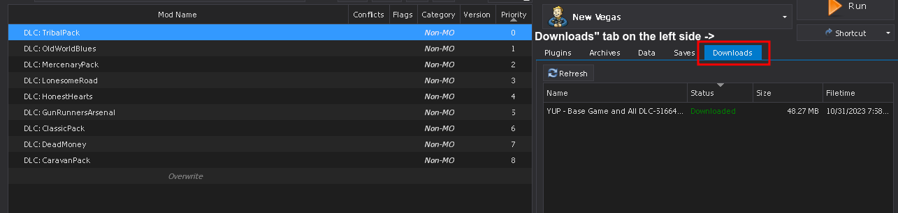
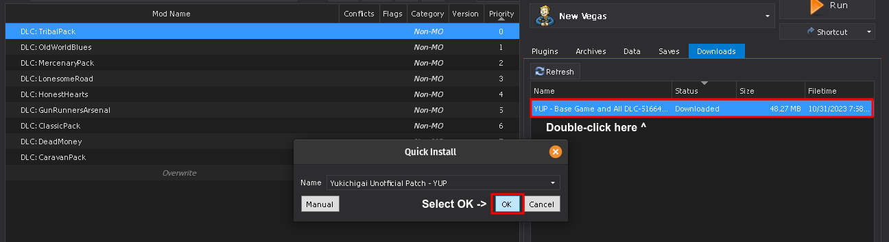
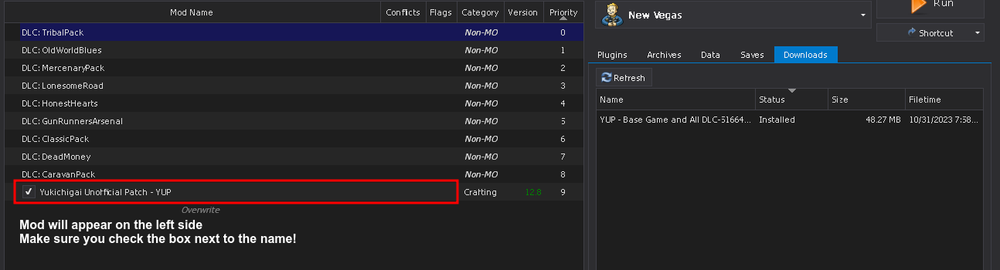

Mod Organizer 2
In this step, we will install and configure Mod Organizer 2.
- Download Mod Organizer 2 from here.
- Once the download has finished, extract the archive and put the folder in any location outside of any default Window folders (like
Program Files x86) and outside of the game's Root folder (An example of a safe location isC:\Modding\Mod Organizer 2).
- Run ModOrganizer.exe inside the Mod Organizer 2 folder you extracted before.
- You will be prompted with a pop-up called Creating an instance, in which you should just select Next.
- On the next page, select Create a portable instance.
- On the next page, select New Vegas.
- On the next page, keep the Location file path default.

If you have MO2 installed on an SSD or a HDD with little space, you can check the Show advanced options box and change the Downloads file path to a different drive with more space. This will not affect download/game performance, and the downloads can be deleted after the mods have been installed.
- On the last page, select Finish.
- MO2 will launch and prompt you with Show tutorial?, this is recommended if you never used the tool before.
- From the pop-up called Register?, select Yes.
- This pop-up will not show up if you have already registered a different instance of MO2.
- Open Windows Security.
- Open Virus & threat protection.
- Click Manage settings under Virus & threat protection settings.
- Scroll down and click Add or remove exclusions under Exclusions.
- Add a Folder exclusion and point it to the folder Mod Organizer 2 is in.
- Repeat for the game's Root folder (where FalloutNV.exe is located).
If you are using a third-party antivirus, you will need to find the exceptions menu and add those 2 folders mentioned previously.
- Once Mod Organizer 2 has loaded, right-click in the right pane and select Enable all.
- Order the plugins in the right pane as follows:
- If there is a plugin called FalloutNV_lang.esp in the right pane, navigate to the game's Data folder and delete it.
- If you do not know what the game's Data folder is, read the Key Terminology section from the Setup page.

The translation plugin must be deleted because it directly edits thousands of records to change the language, which will cause many incompatibilities with most mods. Because of conflicts like this, the guide unfortunately only supports the English version of the game.
- Select the X in the bottom right of MO2 to close the log window.
- Select the
 button at the top of MO2 to open the settings.
button at the top of MO2 to open the settings. - In the Theme tab, you can select a different style of your choosing from the drop-down menu at the top.
- In the Nexus tab, select Connect to Nexus.
- This option will not show up if you have already connected your Nexus account on a different MO2 instance.
- MO2 will open your browser and prompt you to authorize the connection.
- Once authorized, close out of MO2's settings and restart if prompted.

- Select the
 button at the top of MO2 to open the profiles menu.
button at the top of MO2 to open the profiles menu. - Select the Default profile, then select Copy.
- Name the new profile Blue Moon.
- Select the Blue Moon profile and make sure both Use profile-specific Game INI Files and Automatic Archive Invalidation are enabled at the bottom.
You may get a pop-up called INI file is read-only when attempting to make/select a new profile. If so then select Remember my choice from the drop-down at the bottom then click Clear the read-only flag.
- Exit out of the profiles menu and select the Blue Moon profile from the drop-down above the left pane.


Standard mod installation procedure:
- Click the Mod Manager Download button next to the file specified in the guide.
- Once the download has finished, select the Downloads tab on the right side of MO2 
- Double-click on the mod to install it. 
- Enable the mod on the left pane. 
If that is the case, do the following:
- Click the Manual Download button (or whatever the download button is for the respective site).
- Once the download has finished, click the
 button at the top of MO2.
button at the top of MO2. - From the new window, navigate to where the file was downloaded to and double-click it.
- Finish the install as you would with a Mod Manager Download mod.
- When installing a second main file or an optional file, you should select the Rename option and rename the mod to its respective file name. This will make MO2 install them as separate files for easier management.
- If you are updating from an old version of a mod, you should select Replace, this will automatically delete all the files from the old version of the mod and replace them with the ones from the new version.
- When installing an update file in addition to the main file, select Merge. This will merge the contents of the update file into the main file, replacing any conflicting files with the updated files and keeping all the original files from the main file.